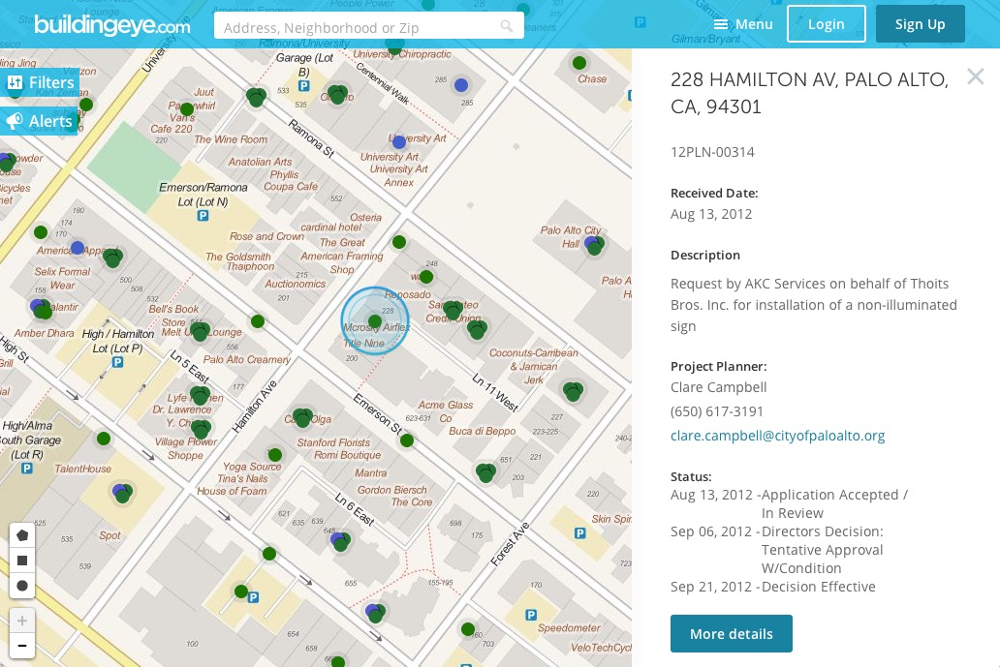

Es la información liberada de la Administración Pública para fomentar la participación ciudadana y generar iniciativas para en beneficio de la sociedad en general.
Política municipal
Promover la colaboración ciudadana, la creatividad, el acceso a la información y la construcción de ecosistema municipal de innovación abierta
Principios de los datos abiertos
Información de carácter público, de conformidad con la Ley 27806, Ley de Transparencia y Acceso a la Información Pública, producida por los órganos que conforman la Municipalidad de San Isidro
Principios de los datos abiertos
Completos
Primarios
Periódicos
Accesibles
Procesables
No discriminación
No propietarios
Sin licencia
Datos liberados
Datos liberados
Desarrollo humano
Jornadas y campañas de salud
Actividades gratuitas OMAPED
Campañas veterinarias
Actividades OMAPED (Oficina Municipal de Atención a la Persona con Discapacidad)
Datos liberados
Ciudad sostenible
Campaña aire limipio – monitoreo
Horarios y rutas recolección selectiva de residuos sólidos
San Isidro recicla: Ruta 1/Martes
San Isidro recicla: Ruta 2/Lunes
San Isidro recicla: Ruta 3 / Jueves
San Isidro recicla: Ruta 4 / Viernes
San Isidro recicla: Viviendas empadronadas
Datos liberados
Administración, finanzas y logísticas
Órdenes de bienes y servicios
PAC inicial 2015
PAC modificado 2015
Procesos del plan anual
Procesos de selección publicados al SEACE
Datos liberados
Educación y cultura
Actividades culturales
Funciones de teatro
Funciones de cine
Cine en tu parque
Cuéntacuentos en espacios públicos
Conciertos
Danzas
Exposiciones
Música en espacios públicos
Plan lector
Videoproyección en espacios públicos
Actividades varias
Datos liberados
Planeamiento y presupuesto
Banco de proyectos
Presupuesto PIA Ingresos
Presupuesto PIA Gastos
Presupuesto PIM Ingresos
Presupuesto PIM gastos
Documentos normativos
Datos liberados
Seguridad ciudadana
Consolidado Intervenciones Serenazgo
Apoyo operativo a PNP
Apoyo a bomberos
Apoyo a PNP
Apoyo y fiscalización
Apoyo a PNP Transito
Consolidado infracciones impuestas
Infracciones obras
Infracciones Defensa Civil
Infracciones comercio vía pública
Infracciones autorizaciones y anuncios
Infracciones sanidad, canes y tabaco
Infracciones otras
Datos liberados
Licencias de edificación/autorización y control
Licencias de funcionamiento vigente
Licencias de funcionamiento
Licencias de edificación
Obras
Proyectos de inversión pública en ejecución y proceso 2015
Cómo usar los datos abiertos
BuildingEye

Información de obras en edificios o en construcción en el vecindario.
Muestra permisos de construcción, planificación de proyectos, eventos públicos, licencias de negocio y actividades cívicas.
 CC BY
CC BY
 CC BY-SA
CC BY-SA
 CC BY-ND
CC BY-ND
 CC BY-NC-SA
CC BY-NC-SA
 CC BY-NC-ND
CC BY-NC-ND